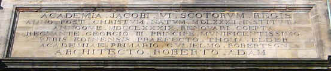
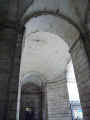
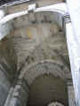
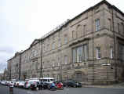
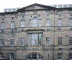
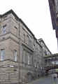
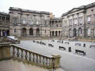
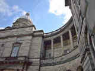

| Astoft |
| University
of Edinburgh - Old College
Click on photos to enlarge |
||||
|
Notes in italics are extracts from Pevsner Architectural
Guides, Edinburgh by John Gifford, Colin McWilliam and David Walker (1991), Yale University Press. |
||||
|
The outside of the
quadrangle is by Robert Adam, 1789, his greatest public work, the inside
by William H. Playfair, 1819-27. There are overlaps between the two
stages, but all the magnificent Greek Revival interiors are
Playfair's. The dome is of 1887. ... |
||||
|
Nothing in Scotland is grander than
Adam's ENTRANCE FRONT. 69 m. long, its massing enhanced by the upward
slope of South Bridge from N to S, it has a major and two minor archways
framed by Roman Doric columns and flanked by advanced distyle porticos of
the same order, all giant monoliths of Craigleith stone. ... Over the
arches a great lunette ... Three-bay links and
pavilions, the windows set closer at the ends. By
skilful juggling of the window-cornices and pediments, both first and
second floors have the aspect of main storeys; the third floor is just a
plain frieze with plain oblong windows punched in it. ...
|
||||
 |
||||
|
Above the cornice a wide panel with the inscription ' ... ARCHITECTO ROBERTO ADAM' . |
||||
  |
||||
|
The entry is awe-inspiring. Plain domical vault in the centre, three groin-vaults on each side. |
||||
   |
||||
| North (2) - South - West | ||||
|
The N and S fronts (109 m. long) have end pavilions with Venetian over columned tripartite windows. The N side, originally facing the narrow lane of North College Street, follows Adam's design. At first only the E pavilion had its rusticated base and median guilloche frieze, but in 1888 Anderson suitably embellished the W and the pedimented intermediate pavilions as part of the architecture of Chambers Street. On the S side Playfair modified and subdued Adam's grand centrepiece and intermediate pavilions to suit his own large library. ... |
||||
|
 |
||||
| East - North - South - West | ||||
|
In the QUADRANGLE, Playfair repeated at the other three corners the
Ionic-columned NW quadrant he inherited from Adam. His somewhat changed
design for the W museum block (e.g. with doubled pilasters at the ends) is
still an insufficient climax for his own splendid N and S elevations,
their en-to-end Corinthian pilasters twice modulated into pedimented
colonnades over the faculty entrances. |
||||
|
The E side, an unhappy version of Adam's front with insufficient leg-room, is rendered still more inadequate by the ponderous dome overhead. ... |
||||
 |
||||
| Detail of: South-east quadrant - West range - North range | ||||
|
Other University Buildings: |
||||
| Home | Architecture Index | Email: astoft.freedom010@passmail.net | |
All photographic images on this website are copyright the website owner 2001 or later unless otherwise stated. Email contact above. Full size originals (3-6 megapixels) are available for approved purposes.